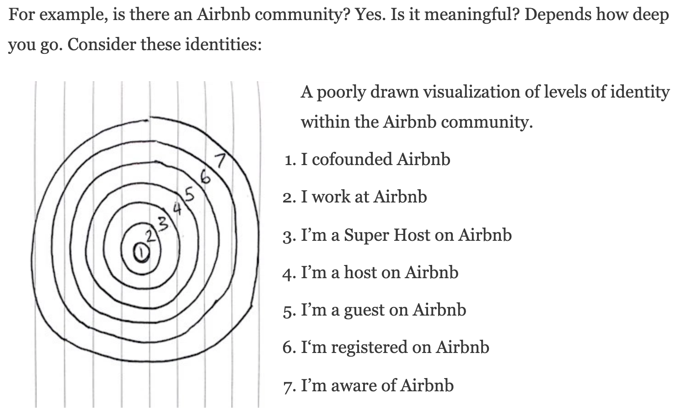
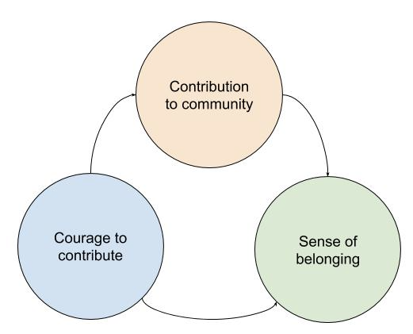
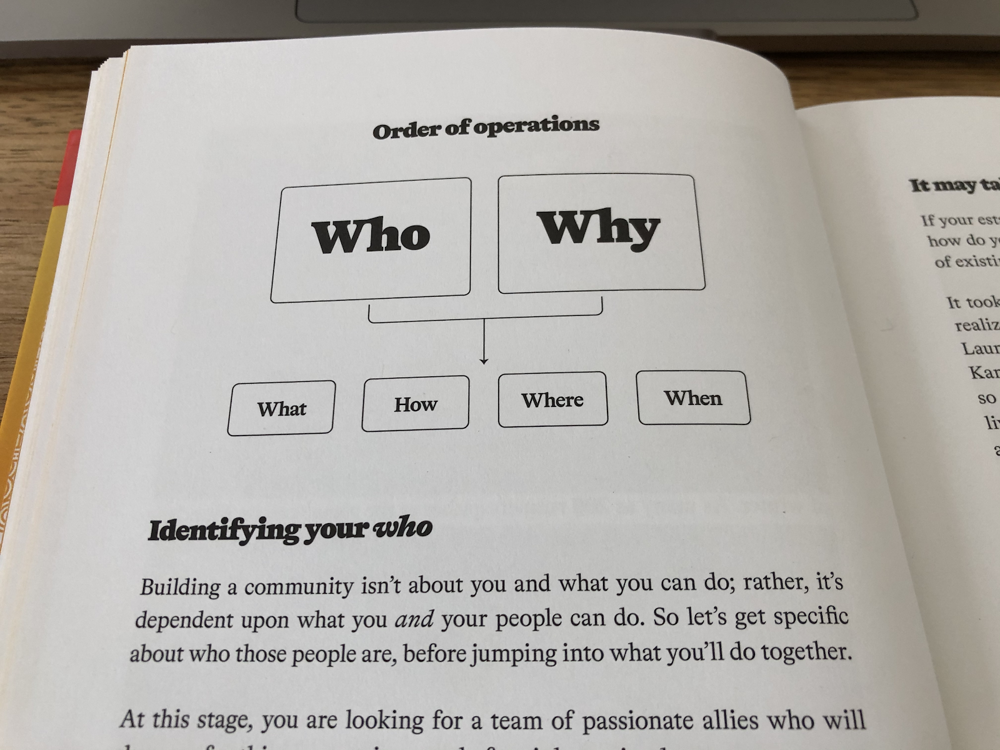

What is a Community Engineer?
A Community Engineer¹ is a person who figures out how to get members to achieve the purpose of a community.
I spent a few years at Offerzen building communities of developers and developing ideas around Community Engineering, and wrote this as a collation of the core concepts.
The Definition of Engineering
"Engineering is figuring out how to do what you want with what you've actually got." — John Carmack on The Joe Rogan Show.
The Definition of Community
A community is a group of people with a shared identity². The more specific the identity, the more meaningful membership becomes.
To illustrate: a community of "people who ride mountain bikes on Table Mountain on a Saturday morning" has more meaning to members than a community of "people who ride mountain bikes."
Members would have more to talk about and share with each other. The closer you get to the core, the stronger the identity and meaning becomes.
From "The Definition of Community" by David Spinks"²
Community Feeling
According to Alfred Adler³, deep happiness can be found in making a contribution towards helping others — without compromising oneself⁴. Putting the well-being of "us" above only "me" lets people transcend their own existence and plug into a greater network.
Adler called this "gemeinschaftsgefühl" ⁵ or "community feeling". This feeling lets people overcome a fear of being left out, giving them courage to contribute repeatedly, creating a virtuous cycle.
The virtuous cycle of contribution
I'd like to implore you to read "The Courage to Be Disliked" ⁴ and "The Courage to Be Happy" ⁶ by Ichiro Kishimi and Fumitake Koga. They're Socratic dialogues that deep dive into Adler's way of thinking, which in my mind is foundational to building happiness for yourself and your communities.
Engineering Communities that Thrive
Communities organically grow, operate, and die at the whim of the chaotic world. If you want to help a community thrive and become a resilient network of people, you need to engineer it.
I'd like to refer to an example from Social Architecture⁷, written by the late Pieter Hintjens.

The late Pieter Hintjens, a world-class community engineer
In Pieter's ZeroMQ online open-source community, he found that old-timers became subject matter experts. Experts were given the power to moderate new contributions: and would generally reject them unless they met very high standards. This sounds good — but the result was that it broke the virtuous cycle of contribution and scared off new members.
To counter this, Pieter wrote a Collective Code Construction Contract⁸, with the high-level goal to:
… provide a reusable optimal collaboration model for open-source software projects.
To ensure new members were empowered to contribute, one of the rules of the community contract is:
Everyone, without distinction or discrimination, SHALL have an equal right to become a Contributor under the terms of this contract.
New member contributions were thus protected, and experts needed to jump in to help the newbies fix their contributions. On the other hand, bad contributions went into production and caused issues and were thus rejected on merit rather than on "expert opinion".
Connect, Create, and Change (the World)
When people connect, they create new things and change the world. There are millions of communities all around the world doing this every day in big and small ways.
A famous example is The Homebrew Computer Club⁹, which accommodated Steve Jobs and Steve Wozniak and helped them develop and launch Apple Computers.
Community engineers get to set the stage to spark this connection between community members.

Steve Jobs and Steve Wozniak creating Apple Computers at the Homebrew Computer Club
Becoming a Community Engineer
To become a community engineer, you need to find or start a community to contribute towards.
Maybe there's a thriving community out there you can join and learn from? Maybe there's a struggling community that needs your help? Maybe there's a group of people waiting to be led as a community.
You might even already be a community engineer of some kind — you just need to recognize that and double down on getting your people together!

Me, bottom left, having a Project Thrive Jam
Identifying a Community to Start // Start Engineering
The best book on building a community that I know of is Get Together¹⁰. The starting point for identifying a community to join or start is to decide "who" and "why" people are part of this community.
Who do you care about; share an interest, identity, or space with; and want to help? Once you have answered these questions, you need to be able to answer…
Why would members want to come together?
Then you can start worrying about the what, when, where, and how.
Get Together Book
Thanks for reading…
And happy community engineering! If you want to chat with me, email me at benblaine@gmail.com or Tweet me @benblainex
Two communities I am busy contributing towards are:
- The Investec Programmable Banking Beta Community, in partnership with OfferZen
- OfferZen Foundation's Project Thrive Community
Cheers, Ben
References
- "Engineer - Wikipedia." Accessed 23 Feb. 2020.
- "The Definition of 'Community' - David Spinks - Medium." 11 Jan. 2018. Accessed 23 Feb. 2020.
- "Alfred Adler - Wikipedia." Accessed 23 Feb. 2020.
- "The Courage to be Happy: True Contentment Is … - Goodreads." Accessed 23 Feb. 2020.
- "gemeinschaftsgefuhl - Wiktionary." Accessed 23 Feb. 2020.
- "The Courage to Be Disliked: How to Free Yourself, Change …." Accessed 23 Feb. 2020.
- "Social Architecture: Building On-line Communities by Pieter …." Accessed 23 Feb. 2020.
- "42/C4 | ZeroMQ RFC." Accessed 23 Feb. 2020.
- "Homebrew Computer Club - Wikipedia." Accessed 23 Feb. 2020.
- "Get Together Book | How to Build a Community With Your …." Accessed 23 Feb. 2020.